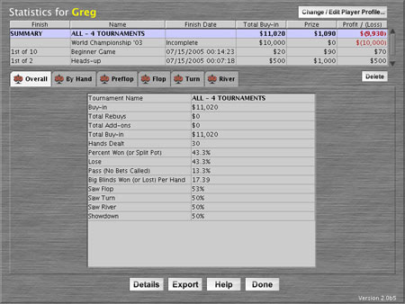
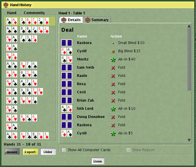
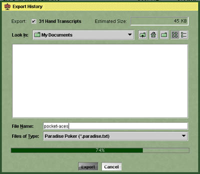

Analysis Analysis |
DD Poker gives you the ability to analyze how you play. The analysis
functionality collects statistics independently for each player profile. It
is therefore a good idea to use different profiles for each person playing so
that everyone has their own statistical data.
Each and every hand dealt, in every game played by the player, practice and
online, is saved here and added to the statistical analysis. You can actually
view the entire hand history (all down cards, board cards, bets, everything)
of every hand you ever played. The statistics display how you play each hand
and how often you win or lose with it.
Stats are shown for the current player profile, which can be changed with
the Change / Edit Player Profile... button.

Overall
Tab
|
The overall tab displays a summary of each and every hand dealt to this
player, for every hand in every game ever played in practice and online,
regardless of game completion.
Highlight a tournament by clicking on it in the list above to display the statistics for that tournament. By
choosing the Summary of All tournaments instead of an individual tournament, the statistics shown will be a
grand total of all tournaments played.
| Tournament Name |
Displays the tournament name you have selected above. Note: (online) will be
displayed next to all online tournaments. Computer cards can not be shown in the details for
online games.
|
| Buy-in |
The amount of money to start the tournament. |
| Total Rebuys |
The total amount of money spent on optional tournament rebuys. |
Total
Add-ons
|
The total amount of money spent on an optional tournament add-on. |
| Total Buy-in |
The grand total of money spent with the buy-in, rebuys, and add-on combined. |
| Hands Dealt |
Total number of hands dealt. |
| Percent Won |
What percentage of the time this player won a pot or
a split pot. The total percentage of hands are divided into three (percent won, lose, and pass).
|
| Lose |
What percentage of the time this player lost a pot. |
| Pass |
What percentage of the time this player did not call any bets and folded the
hand.
|
| Big Blinds Won or Lost |
This is a measure of how profitable your play is, indicating the average increase
or decrease in your stack per hand, relative to the size of the big blind. It is not the count
of the number of times you actually won or stole someone's big blind. It is the change of the
money in your stack averaged over the number of hands you have played in relation to the size of
the big blind.
Example: If this number is zero, averaging out the number of hands you have played, your
productivity of your play has not made any ground. If this number is 100.00, means you win an
average of 100 big blinds per hand. If the number is negative, on the average, you are losing
ground.
|
| Saw Flop |
Percentage of time the player called to see the flop (still be in the hand when the
flop was dealt).
|
| Saw Turn |
Percentage of time the player called to see the turn (still be in the hand when 4th
street was dealt).
|
| Saw River |
Percentage of time the player called to see the river (still be in the hand when
5th street was dealt).
|
| Showdown |
Percentage of time the player stayed in the hand to the very end. |

|
Export Table to Microsoft Excel. Right click (CTRL-click
on Mac) any of the tables such as the Overall, By Hand or Preflop
through River tables to bring up the Table Menu pop up. The Export
Table menu item is used to export the table in a comma delimited
file format (.csv) that can be read by most popular spreadsheet
software.
|
|
| Buttons |
| Change / Edit Player Profile |
Opens the Player Profile screen to change or edit the current player. |
| Delete |
Deletes the currently selected tournament from the player history of the player profile
currently selected. If the Summary for All tournaments is selected, delete will remove all
tournament history for the player currently selected.
|
| Details |
Opens the Hand History pop up screen with the tournament or hands currently selected. See Hand
History Screen below.
|
| Help |
Displays this Help topic. |
| Done |
Return to the main menu |
|
|
By Hand / Preflop / Flop / Turn / River
Tabs
|

| By Hand Tab |
The By Hand tab displays a list of all hands dealt to this player for the selected
tournament(s) and selected player.
Example: If you look at AA, you can see data including the number of times this player was dealt aces, and
what percentage of the time you won with with them.
| Cards |
Displays one set of hole cards you were dealt at least once during
the tournament(s) selected.
| s |
Suited - The 's' next to the cards stands for Suited, meaning
both cards are of the same suit (i.e., both clubs).
|
| o |
Off-Suit - The 'o' next to the cards stands for Off-Suit,
meaning the cards are different suits (i.e., a club and a spade).
|
|
| Hands |
Displays the number of times you were dealt these cards. |
| Win |
Percentage of time you have played with these cards and won. The
total percentage of hands are divided into three, percent won, lose,
and pass.
|
| Lose |
Percentage of time you have played with these cards and lost. |
| Pass |
Percentage of time you have played with these cards, not called
a bet and folded.
|
| BB Won |
For the times you have been dealt these cards, this is a measure
of how profitable your play is, indicating the average increase or
decrease in your stack per hand, relative to the size of the big blind.
It is not the count of the number of times you actually won or stole
someone's big blind. It is the change of the money in your stack averaged
over the number of hands you have played in relation to the size of
the big blind.
|
| Flop |
Percentage of time you have played with these cards until at least
the flop was dealt. You can then look at these times by clicking the
Flop tab.
|
| Turn |
Percentage of time you have played with these cards until at least
the turn was dealt. You can then look at these times by clicking the
Turn tab.
|
| River |
Percentage of time you have played with these cards until at least
the river was dealt. You can then look at these times by clicking
the River tab.
|
| Showdown |
Percentage of time you have played with these cards all the way
to the showdown, which is after the final round of betting at which
all remaining players turn their cards over to determine who wins.
|
|
|
Export Table to Microsoft Excel. Right click (CTRL-click
on Mac) any of the tables such as the Overall, By Hand or Preflop
through River tables to bring up the Table Menu pop up. The Export
Table menu item is used to export the table in a comma delimited file
format (.csv) that can be read by most popular spreadsheet software.
|
Hint: You may analyze several hands at one time by CTRL clicking to select multiple hands, or Shift Clicking
for several rows and clicking the details button.
|
Preflop
Flop
Turn
River
Tabs |
The Preflop, Flop, Turn and River tabs display how you did
with your hole cards from the pre-flop to the river, and only displays the cards that you played long enough
to reach the flop, turn and river.
| Cards |
Displays one set of hole cards you were dealt at this point in the deal for
the the tournament(s) selected.
| s |
Suited - The 's' next to the cards stands for Suited, meaning both cards are of the
same suit like both clubs.
|
| o |
Off-Suit - The 'o' next to the cards stands for Off-Suit, meaning the cards are both
different suits, like club, spade.
|
|
| Hands |
Displays the number of times you played these cards to this point
in the deal.
|
| Check, Call, Bet,
Raise, Reraise, Fold |
Displays what percent of the time you checked, called, bet, raised,
reraised, or folded with these cards at this point in the deal.
|
| Win |
Percentage of time you have played with these cards to this point
of the deal and won.
|
|
The Details button opens the Hand History pop up window. The
hand history displays what you have selected when you click Details.
You may view all hands ever dealt by selecting the tournament Summary. All the
hands for an individual tournament will be displayed by selecting just one tournament.
Or you may choose an individual hand or group of hands from any of the screen
tabs.

| Hand History |
Displays the hand history for the selected hands chosen.
The left column displays the selected hands chosen. Example: If you choose AA from the By Hand tab and click
Details, the left column displays every hand you had a pair of aces. You may then click on
any of these hands to see how you played them in the right column.
| Newer |
Click Newer to work back to the current hand.
|
| Older |
Click Older to display the previous group of 9 hands played. |
| Export |
Click Export to export an individual hand to Poker Tracker. |
| Show All Computer Cards |
Click Show All Computer Cards to flip the computer cards over.
(Practice games only)
|
| Show Reason |
Click Show Reason as training tool to understand why actions were made.
(Practice games only)
|
Hint: You may choose All Tournaments then click Details to see every hand dealt to this
player, choose a single tournament, or pick individual rows from one of the other tabs with a click,
CTRL click or SHIFT click, then click the Details button. |
The Export button opens the Export History pop up window, from which you can export hand
histories to a file. The format currently supported
for this file is compatible with the format used by Paradise Poker, and is suitable for import
into Poker Tracker. Other formats may be supported in the future; requests are welcome.
hand history displays what you have selected when you click Details.
You may export all hands ever dealt by selecting the tournament Summary. All the
hands for an individual tournament can be exported by selecting just one tournament.
Or you may choose an individual hand or group of hands from any of the screen
tabs.

| Export History |
Exports the history for the selected hands chosen.
| Hand Transcripts |
Check Hand Transcripts to export detailed transcripts of each hand.
|
| Tournament Summaries |
This feature is not yet implemented, but in a future release, you will have the option to check
Tournament Summaries to export summaries for the tournaments represented by the
selected hand(s), allowing you to use additional Poker Tracker features with your DD Poker data.
|
| Estimated Size |
Provides a very rough estimate of the size of the resulting file. |
Hint: You may choose All Tournaments then click Export to export every hand dealt to
this player, choose a single tournament, or pick individual rows from one of the other tabs with a
click, CTRL click or SHIFT click, then click the Export button.
IMPORTANT: If you plan to import hands into Poker Tracker, especially if you also use Poker Tracker to
analyze your play on Paradise Poker, we recommend that you use a separate database, to avoid conflicts
with player names or game numbers from real Paradise Poker hands, and to protect your important hand
history data from any possible corruption by unforseen consequences of importing data from DD Poker.
|
DD
Poker Website